Project 4 · November 2025
In this project I build up from camera calibration and a simple 2D neural field to a full 3D Neural Radiance Field (NeRF) that can render novel views of an object from arbitrary viewpoints.
I first estimate my camera intrinsics and lens distortion using ArUco tags. Using OpenCV's ArUco detector, I collect 2D corner positions across a set of calibration photos and associate them with known 3D coordinates on the tag plane. These correspondences are passed to cv2.calibrateCamera, which recovers the intrinsic matrix K and distortion coefficients.
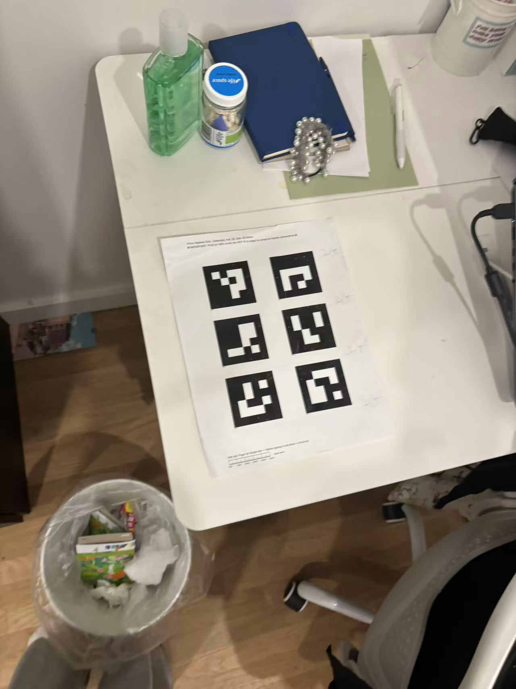
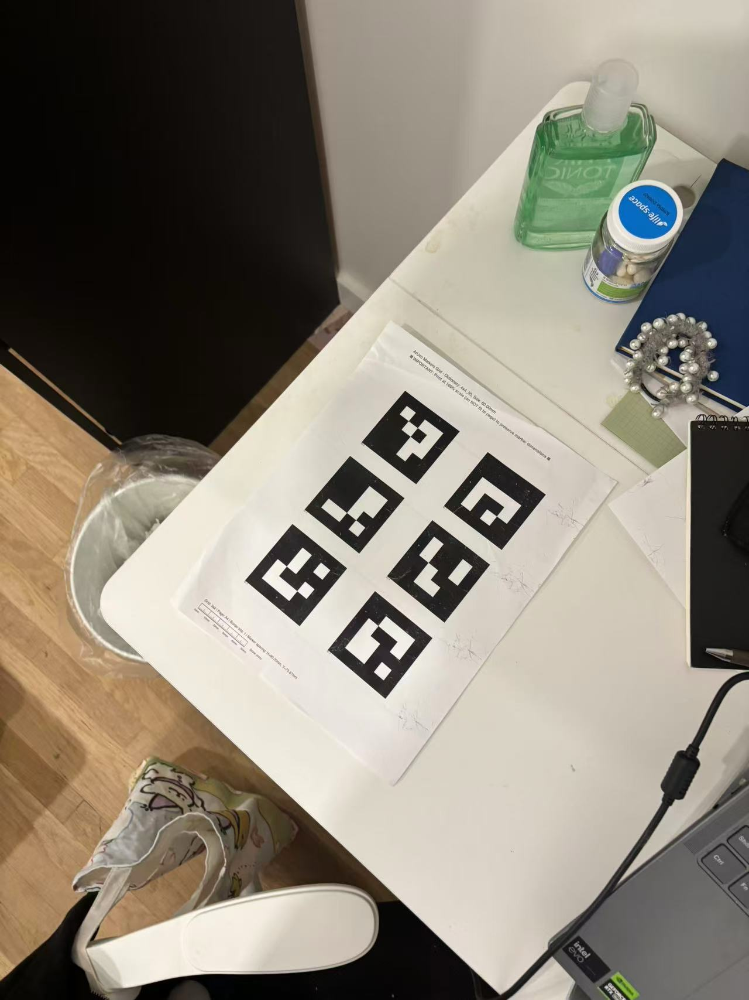
The calibration images are captured from many viewpoints and distances while keeping the camera zoom fixed. This gives a diverse set of observations that allow calibration to converge to a stable solution.
Next I capture a multi-view dataset of my chosen object placed next to a single printed ArUco tag. I keep the same camera and focal length as in calibration, move the camera around the object, and record 30 to 50 images at roughly constant distance so the object fills about half of the frame.
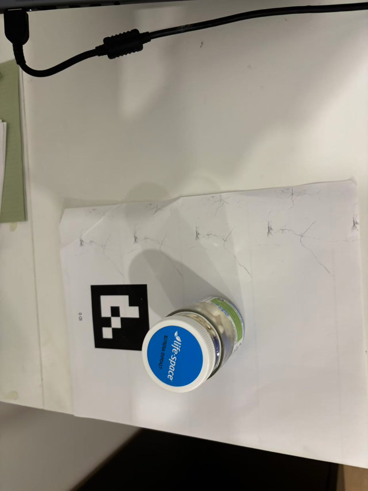
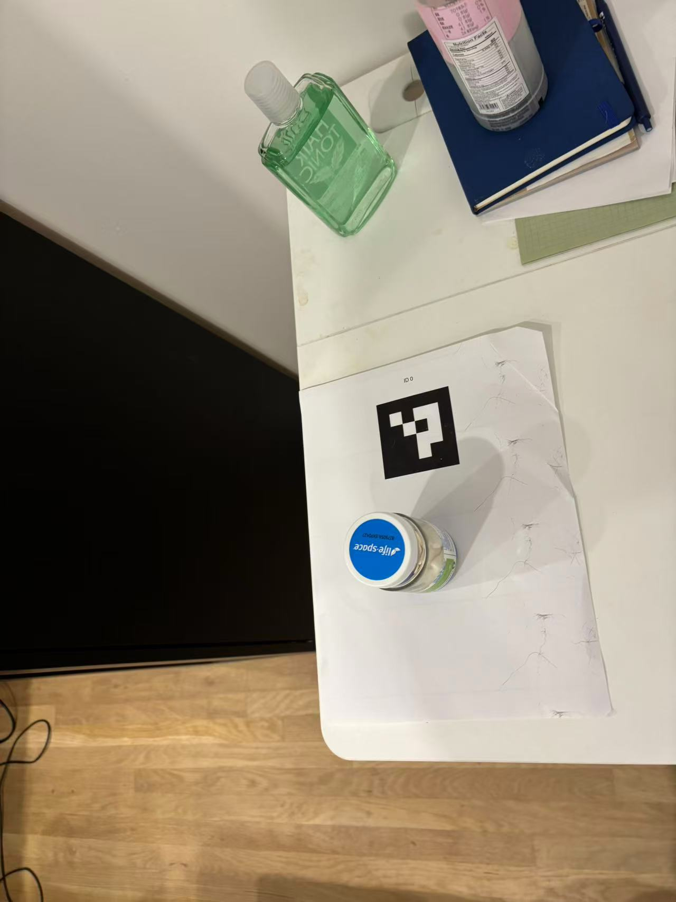
For each object image, I detect the ArUco tag and use cv2.solvePnP to solve the Perspective-n-Point problem. This estimates the camera's extrinsics (rotation and translation) from:
[(0,0,0), (0.02,0,0), (0.02,0.02,0), (0,0.02,0)] for a 2 cm tagThe function returns a rotation vector and translation vector. I convert the rotation vector to a matrix with cv2.Rodrigues(). OpenCV returns the world-to-camera transform, so I invert it to get camera-to-world:
Poses were recovered for 35 of 43 object images; images where the tag wasn't detected or solvePnP failed were skipped automatically. The Viser screenshots below show the camera frustums, each displaying its captured image, forming a ring around the object, which is a good sanity check that the poses are consistent.
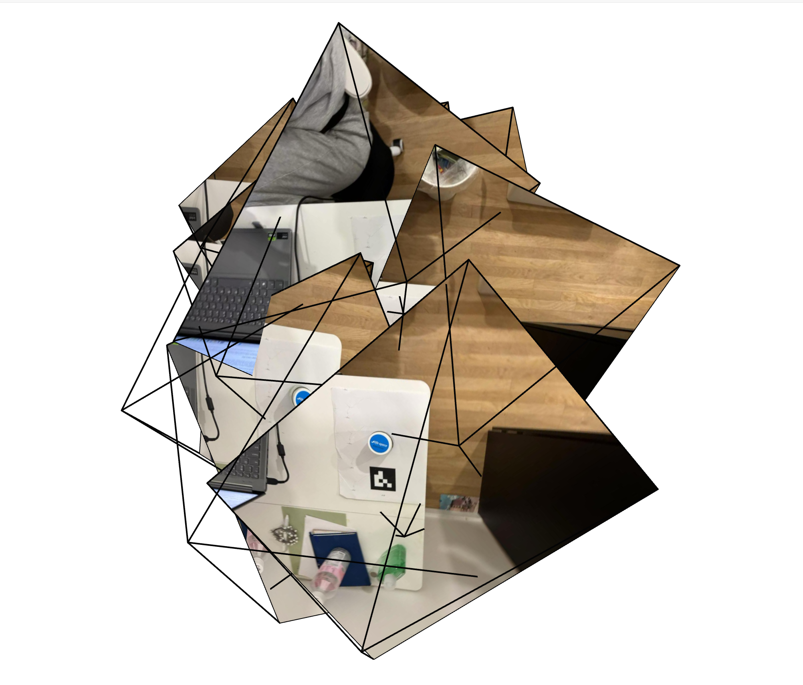
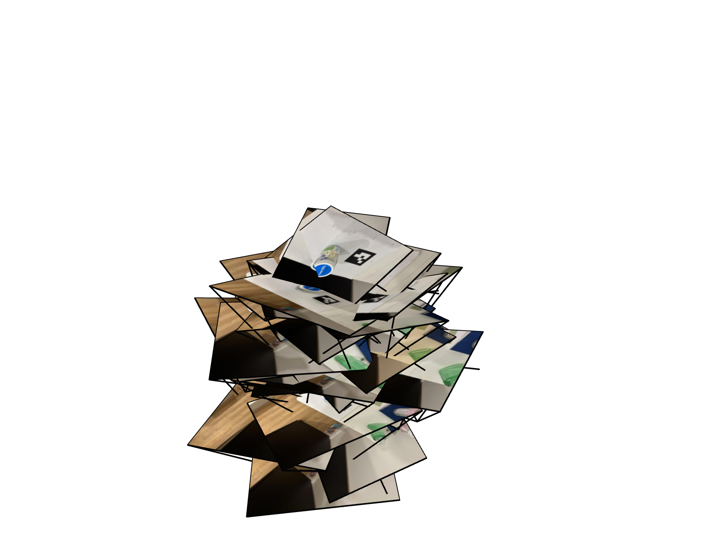
To prepare the data for NeRF training I load every image with its camera-to-world pose, resize to a 400 px maximum dimension, update K for the resize, split into training (70%), validation (15%) and test (15%) sets, and package everything in the same .npz format as the provided Lego dataset. With full distortion coefficients, the undistortion step would look like this:
new_K, roi = cv2.getOptimalNewCameraMatrix(K, dist_coeffs, (w, h), alpha=0)
undistorted = cv2.undistort(img, K, dist_coeffs, None, new_K)
x, y, w_roi, h_roi = roi
undistorted = undistorted[y:y+h_roi, x:x+w_roi]
new_K[0, 2] -= x # update cx for crop
new_K[1, 2] -= y # update cy for crop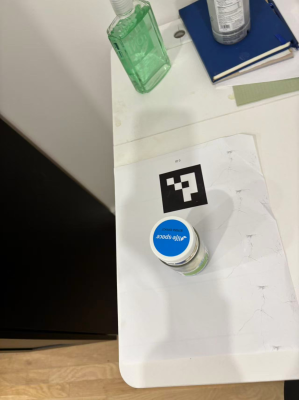
Before moving to 3D, I train a neural field on single images: a multilayer perceptron that takes normalized 2D pixel coordinates, applies sinusoidal positional encoding, and outputs RGB values in [0, 1]. It uses ReLU hidden layers with a sigmoid output, an MSE loss, and Adam with a learning rate of 1e-2. Reconstruction quality is tracked with PSNR.
The prediction starts as noise and sharpens into a recognizable image within a few hundred iterations. Higher encoding frequencies and wider networks capture more fine detail, while smaller models produce smoother, blurrier reconstructions.
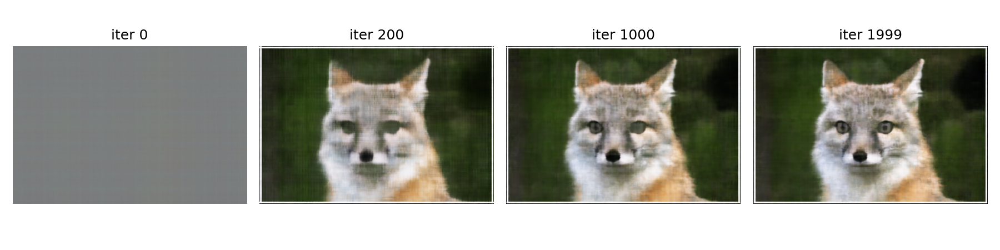
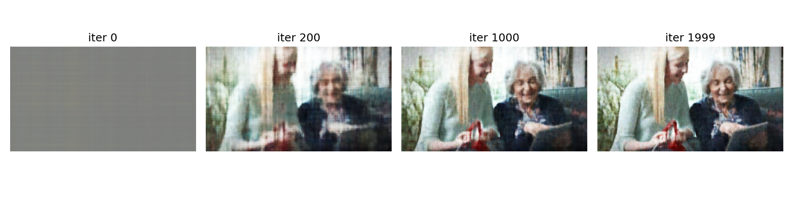
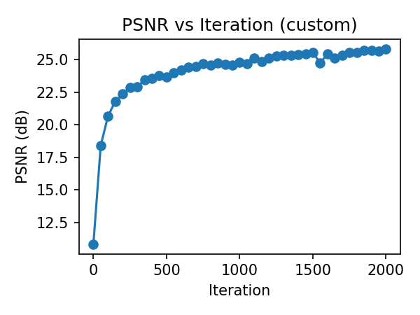
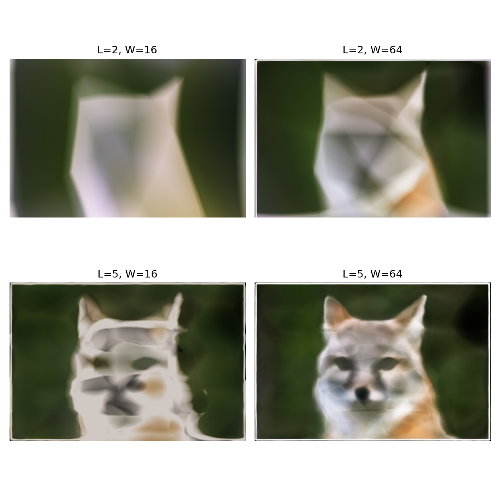
In the second half I implement a NeRF that learns a volumetric representation of the Lego scene from many posed views. The pipeline is ray generation, sampling points along rays, an MLP that predicts color and density, and differentiable volume rendering that maps those predictions back to pixel colors.
Given intrinsics and camera-to-world transforms, I convert each pixel into a ray origin and direction. For training I sample rays randomly across all images, then place a fixed number of sample points along each ray between the near and far bounds, with a small random jitter per interval to reduce aliasing.
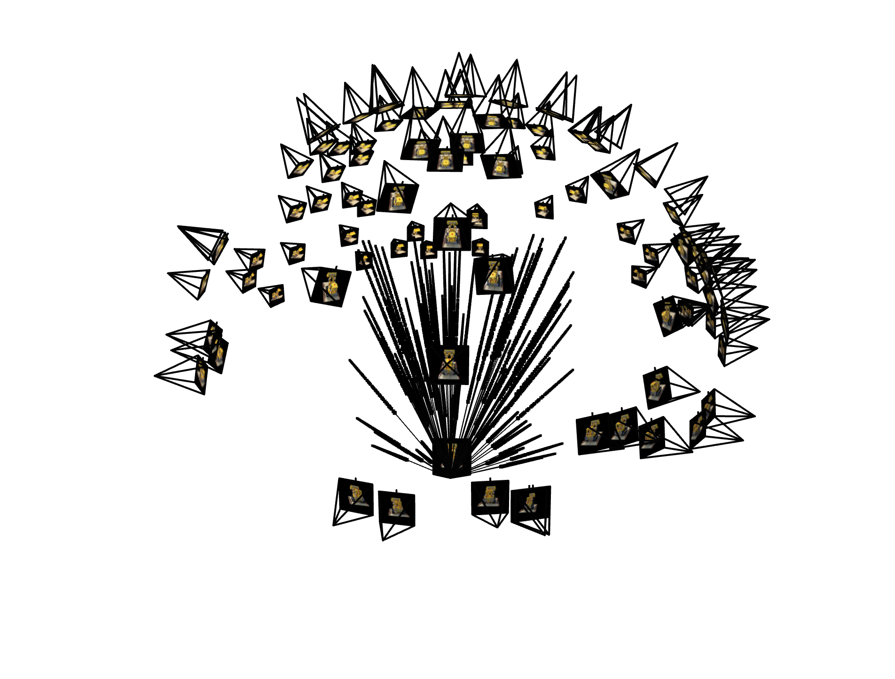
The NeRF takes a 3D position and a view direction (both with sinusoidal encodings) and outputs an RGB color and a volume density. I implement the discrete volume-rendering equation, accumulating colors along each ray with transmittance weights derived from the densities. Everything is written in PyTorch, so gradients flow from each rendered pixel back into the network.
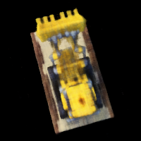
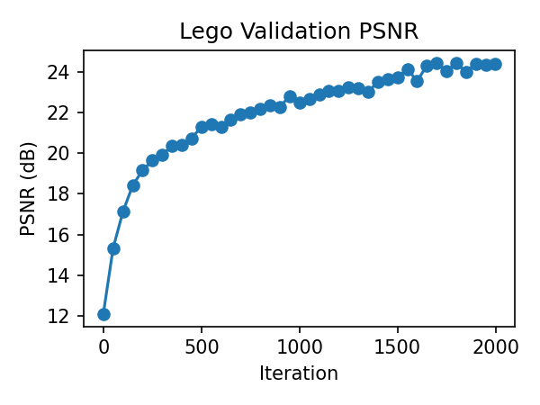
After training, I sweep the camera along the provided test trajectory, rendering each pose through the ray generator and the NeRF to produce a smooth orbit around the model.
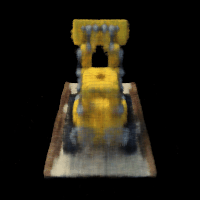
Finally, I reuse the same NeRF on the dataset I captured in Part 0. My object was photographed much closer than the Lego scene, so I adjusted:
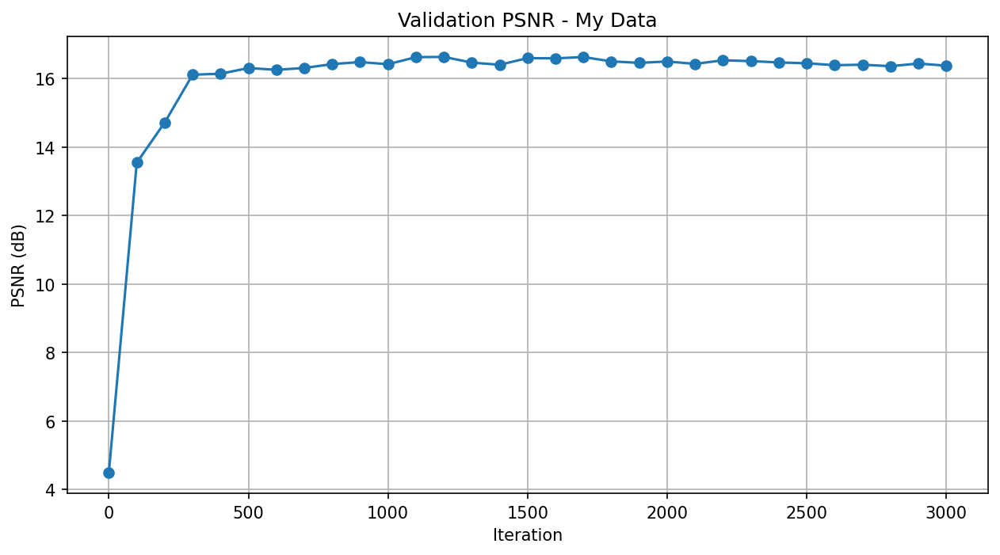
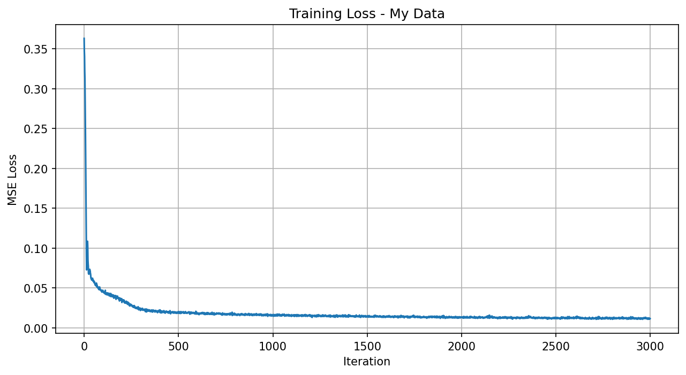
The rendered views gradually move from noise to recognizable shapes and textures, and the final model renders a camera orbit showing the object from viewpoints never seen in training.
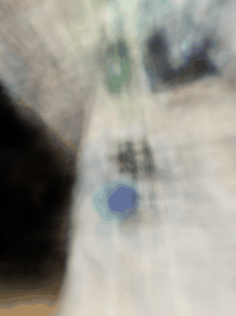
This project ties together camera geometry, neural fields and differentiable rendering. Starting from physical calibration photos, I built a fully learned 3D representation that synthesizes convincing new views of both a synthetic Lego scene and a real object captured with my phone.